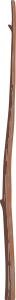
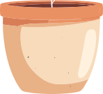

For your sense of self and agency · In development
Make room for yourself.
Your feelings. Your interests. Your choices.
Present Tense helps you stay connected to who you are and what you want—and bring that sense of yourself into your everyday situations and decisions, even when technology, circumstances, or other people pull you in another direction.
Mobile and web planned. Taking shape, thoughtfully.


A place I feel at home
Drawing for myself
Room for my feelings
My humorous side
Give a part of yourself a presence you can carry into what comes next.
When your own voice gets crowded out
Sometimes, you need a moment to ask: “What do I actually want?”
Before another automatic scroll.
When belonging starts to feel like obligation.
When other demands leave little room for what matters to you.
Present Tense is being built to help you pause, make space for what emerges, and carry that sense of yourself into what you do next.
Your sense of self, in the midst of life
Ground yourself. Choose from there.
Notice what matters to you, give it a tangible presence, and let it inform how you respond to the world around you.
01
Check-Ins
Pause where pressure meets you.
Bring your own questions into moments of pressure, so your feelings and intentions have a place in what you choose next. Write your own questions and answer options, or adapt a template.
For example
“What do you want this platform to be for today?”
Planned triggers include chosen times and opening selected apps.
02
Self-Explorations
Give what matters to you a presence.
Explore interests, feelings, relationships, and intentions through virtual objects. Write into a leaf, change a stone’s size to express how much is being asked of you, or represent the distance you want from a community.
For example
Making room for discomfort in a community, and letting it guide whether you want to stay.
Keep these pieces of yourself present as you navigate relationships, demands, and decisions.
03
Self-Records
Keep the world that feels like yours.
Gather traces of your lived experience: images from an ordinary day, familiar ambient sounds, and the places and moments intertwined with your sense of self.
For example
The sound of a familiar place. A day in small pictures.
Revisit what grounds you as you navigate new situations. This feature is still being developed.
Inside Self-Explorations
A part of you. Present in your life.
In the plant exploration, each leaf can carry something that feels like you. Choose a category, put it into your own words, and give it a place on your plant.
A leaf gives that part of you a presence beyond the moment of reflection. Revisit it before a difficult conversation or a busy week: your humorous side can have a place in how you relate to others; your love of drawing can have a say when you decide how to spend your time.
Try choosing a category and writing into the leaf. What would keeping that part of yourself present change about your next choice?
Try the example. Changes stay in this page while it is open; they are not sent or saved. This is a simplified demonstration of the prototype.
As the app takes shape
A few things you might wonder.
Who is Present Tense for?
People who feel that outside pressures are crowding out their own feelings, interests, or choices. You might be rethinking a digital habit, a relationship, or where you feel you belong. The app’s initial audience is still being explored.
When and where will it be available?
Present Tense is in development, with mobile and web planned. There is no announced launch date. Features and platform support may change as the prototype is refined.
What about my entries and AI?
Storage options are still being decided, including keeping entries on your device and syncing to an account. The intended core experience does not require AI. Any AI tools offered in a future version are intended to be optional. Final privacy and storage details will be shared before release.
What would paid user testing involve?
The current idea is to try the app while the creator asks questions and observes how it works for you. Sessions are expected to take no more than 40 minutes. The format, exact length, eligibility, and compensation are not yet settled and will be confirmed before you agree to participate. Expressing interest does not commit you to taking part.
Be here for what comes next
Make room for yourself. In the life you live.
The waitlist will offer development and launch updates, with an option to express interest in helping shape Present Tense through paid user testing.
Waitlist opening soon.
Present Tense is still taking shape. Signups aren’t open yet—please check back here.
When the waitlist opens, you’ll also be able to express interest in paid user testing. Details and compensation will be confirmed before you decide whether to participate.